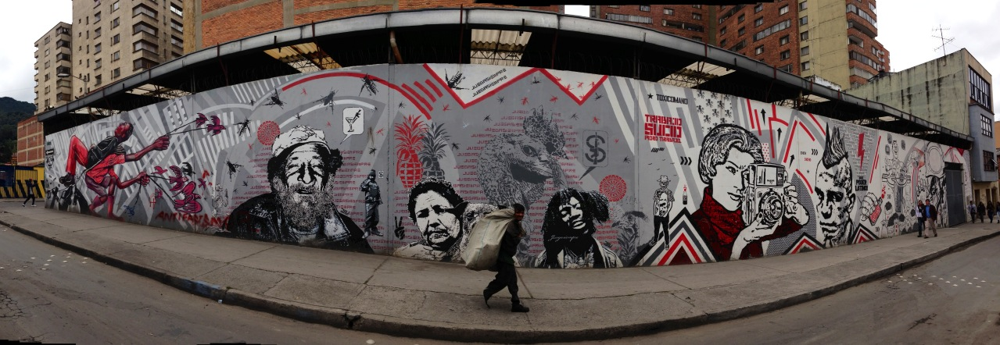
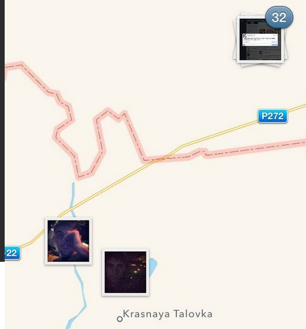
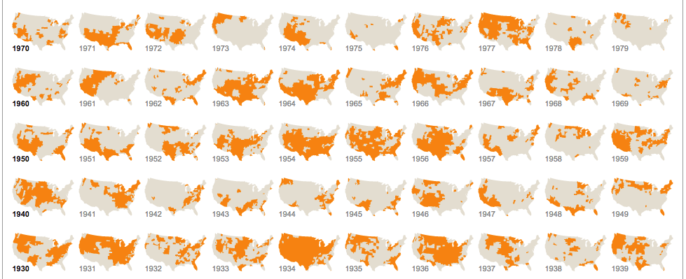
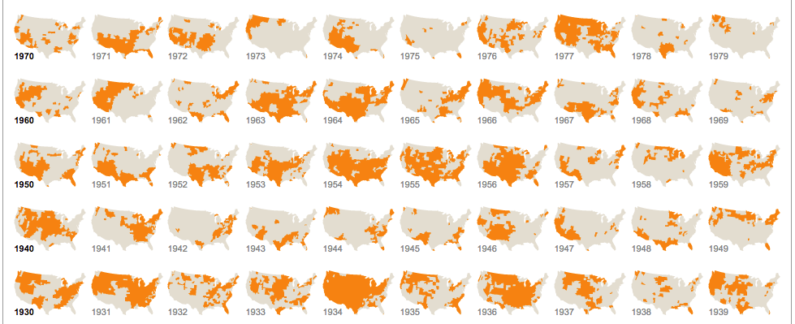

Data-driven Narratives for Activism and Impact

Brian Abelson | @brianabelson | brianabelson@gmail.com
Senior Data Scientist, Enigma
Fellow, Tow Center
slides: bit.ly/1JI2zA1
Why Data-driven Narratives?
- Data enables the exploration of relationships, trends, and anecodotes you might not otherwise have access to or might be hard to clearly communicate.
- Data is varnished with the veneer of "truth".
- Data-driven narratives have the potential to place the audience in the story.
Why not Data-driven Narratives?
- Data fetishism can distract from the human-elements of a story.
- Data is varnished with the veneer of "truth".
- Data can be misleading or hard to interpret (even for the author).
The Good
A good data narrative has the same principles of a good piece of writing.
- Clearly communicates the central point.
- Makes a creative and compelling argument.
- Responsibly qualifies or complicates its claims.
- Provides avenues for future exploration.
The Bad
Good data narratives are all alike;
every bad data narrative is bad in its own way.
The Ugly
Don't Do This:

Tufte's 10 rules
- Show your Data
- Use Graphics
- Avoid ChartJunk
- Utilize Data-ink
- Use Labels
- Utilize Micro/Macro
- Seperate Layers
- Use Multiples
- Utilize Color
- Understand Narrative
Russian Troops in Ukraine - BuzzFeed

Speeding Cops - Sun Sentinel
Drought's Footprint - New York Times


What is a "NewsApp"?
- A large, web-based interactive database that tells a journalistic story using software instead of word and pictures.
- An tool for placing your audience inside a story.
- A utility for for generating new stories.
The "Near and Far" of NewsApps

"what I like to see in a news application [is] a way to see the 'far' view (in other words, the big national picture) and the 'near' view (how the big national phenomenon relates to me personally)"
Dollars for Docs - ProPublica
Syrian Refugees - Al Jazeera America
U.S. Daily Temperature Anomalies - Enigma

U.S. Daily Temperature Anomalies - Enigma

U.S. Daily Temperature Anomalies - Enigma

U.S. Daily Temperature Anomalies - Enigma

What do you think? Twitter Maps
What do you think? Gun Permits Map
Creating an Impact Workflow - NewsLynx

Thanks!
Brian Abelson | @brianabelson | brianabelson@gmail.com